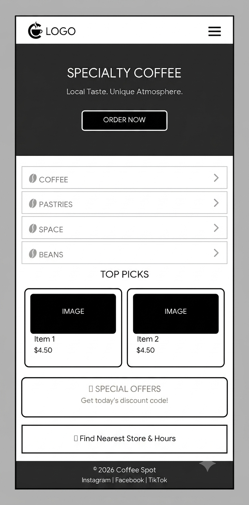
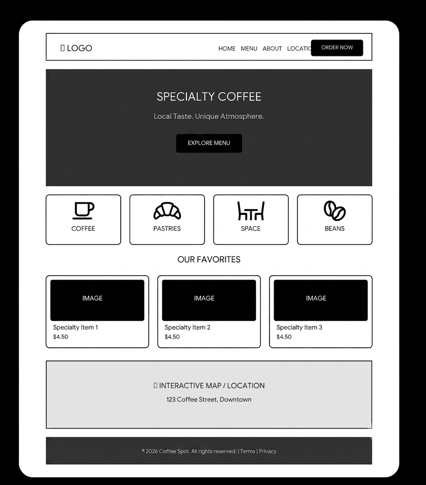

Site Name
Local Coffee Roasters Guide
This name accurately describes the site's purpose: to serve as a guide (directory) of local coffee roasters and cafes in my city. It is clear, direct, and easy to remember for coffee lovers looking for nearby options.
Optional domain availability: localcoffeeroastersguide.com
Site Purpose
The main purpose of this website is to connect coffee enthusiasts with independent local roasters. To achieve this, it will provide the following services and information:
- Real-time Weather: A weather widget on the homepage to suggest whether to drink iced or hot coffee based on the current weather.
- Roaster Directory: A page that loads data from a JSON file, displaying ratings, addresses, and specialty drinks for each location.
- Events & Workshops: A page with a calendar of coffee tastings and brewing workshops (pour-over, espresso, etc.).
- Local Business Support: Highlight small businesses and encourage the community to buy locally sourced coffee.
User Scenarios
These are typical questions that site visitors might ask:
- Scenario 1: “It's really hot today. Which local cafe near me offers good cold brew and has a high rating?”
- Scenario 2: “I want to learn how to brew better coffee at home. Are there any workshops or tastings scheduled for this weekend?”
Color Schema
Warm, earthy colors have been selected to evoke the experience of roasted coffee. This document already uses these colors in its design (check the backgrounds, borders, and text).
- #3E2723 (Dark Coffee) — Used for titles, headings, navigation, and footers. It conveys robustness and warmth.
- #FFF3E0 (Cream/Milk) — Used for section backgrounds and cards. It provides brightness and soft contrast.
- #D84315 (Roasted Orange) — Used for call-to-action buttons, highlighted links, and the weather icon. It adds energy and dynamism.
Typography
The following Google Fonts will be used to reflect the personality of artisan coffee. This document already uses both fonts (check the headings and body text).
- Playfair Display (serif) — Used for headings (h1, h2, h3). It is an elegant and distinctive font, ideal for conveying the tradition and specialty of coffee.
- Nunito (sans-serif) — Used for paragraphs, lists, and general body text. It is rounded, friendly, and highly readable, perfect for directory information and events.
Wireframes
The following wireframes are black and white sketches showing the structure of the home page in both mobile and desktop views. They focus on layout and functionality, not colors, images, or typography.

